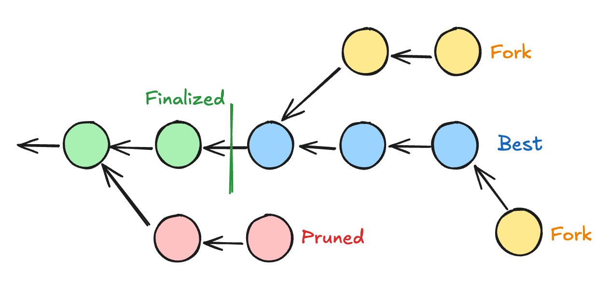

<!DOCTYPE html>
<html lang="en">

<head>
  <meta charset="utf-8" />
  <meta name="viewport" content="width=device-width, initial-scale=1.0, maximum-scale=1.0, user-scalable=no" />

  <title>JSON-RPC Spec Transactions</title>
  <link rel="icon" href="./../../assets/favicon.svg" />
  <link rel="shortcut icon" href="./../../assets/favicon.png" />
  <link rel="stylesheet" href="./../../dist/reset.css" />
  <link rel="stylesheet" href="./../../dist/reveal.css" />
  <link rel="stylesheet" href="./../.././assets/styles/PBA-theme.css" id="theme" />
  <link rel="stylesheet" href="./../../css/highlight/shades-of-purple.css" />

  <link rel="stylesheet" href="./../.././assets/styles/custom-classes.css" />

</head>

<body class="site">
  <header class="site-header">
    <!-- This logo is a link only on the watching server, not the production build -->
    <a href="">
      
    </a>
  </header>
  <main class="reveal">
    <article class="slides">
      <section  data-markdown><script type="text/template">

# JSON-RPC Spec

## Transactions
</script></section><section ><section data-markdown><script type="text/template">
## JSON-RPC Transaction

- transaction_v1_broadcast(tx) -> id
- transaction_v1_stop(id)

Simple? <!-- .element: class="fragment" --->

<aside class="notes"><p>Not so much</p>
</aside></script></section><section data-markdown><script type="text/template">
## Challenges

- Creating the transaction
  - Call data
  - Signed extensions
  - Signers
- Transaction validation
- Transaction states
- Tracking transactions
</script></section></section><section ><section data-markdown><script type="text/template">
# Transactions
</script></section><section data-markdown><script type="text/template">
## Transaction types


<aside class="notes"><p><a href="https://excalidraw.com/#json=Mv0Y4f-NgpogwQkoTLHfq,JSVgtIc_-tbxSHfuDbZocA">https://excalidraw.com/#json=Mv0Y4f-NgpogwQkoTLHfq,JSVgtIc_-tbxSHfuDbZocA</a></p>
</aside></script></section><section data-markdown><script type="text/template">
## Extrinsic V4

#### Signed

[0x84 | Address | Signature | Extra | CallData]

#### Unsigned

[0x04 | CallData]
</script></section><section data-markdown><script type="text/template">
## Signed extensions
</script></section><section data-markdown><script type="text/template">
## Call Data
</script></section></section><section ><section data-markdown><script type="text/template">
# Transaction States
</script></section><section data-markdown><script type="text/template">
## Transaction Validation

<aside class="notes"><ul>
<li>Go through different validation states, what they mean</li>
<li>Transactions valid in a future</li>
</ul>
</aside></script></section><section data-markdown><script type="text/template">
## Transaction Result

<aside class="notes"><ul>
<li>Extrinsic Failed / Extrinsic success</li>
<li>Difference between failed vs invalid</li>
</ul>
</aside></script></section><section data-markdown><script type="text/template">
## Broadcasting

<aside class="notes"><p>Explain what it means to broadcast - it&#39;s not cancellable</p>
</aside></script></section><section data-markdown><script type="text/template">
## Putting it all together
</script></section></section><section ><section data-markdown><script type="text/template">
# Transaction Tracking
</script></section><section data-markdown><script type="text/template">
## Transaction Tracking


</script></section><section data-markdown><script type="text/template">
## Transaction Tracking

Where do transactions live?
</script></section><section data-markdown><script type="text/template">
## Transaction Tracking

- For each transaction:
  - Validate beforehand
  - Request all the new blocks
  - See if they are included
  - Get validation status
  - Get transaction result
- Keep track of best / finalized
</script></section><section data-markdown><script type="text/template">
## Step-by-step
</script></section><section data-markdown><script type="text/template">
## JSON-RPC TransactionWatch

<pba-cols>
<pba-col>

- submitAndWatch(tx) => subId
- unwatch(subId)

</pba-col>
<pba-col>

- validated
- bestChainBlockIncluded
- finalized
- error
- invalid
- dropped

</pba-col>
</pba-cols>
</script></section><section data-markdown><script type="text/template">
## Problem

- TransactionWatch is detached from ChainHead
- Might receive blocks that
  - ChainHead hasn't received
  - ChainHead did receive but now unpinned
- Useful only to know if it has been included.
- But can't get any other info: events, storage, etc.
</script></section></section>
    </article>
  </main>

  <script src="./../../dist/reveal.js"></script>

  <script src="./../../plugin/markdown/markdown.js"></script>
  <script src="./../../plugin/highlight/highlight.js"></script>
  <script src="./../../plugin/zoom/zoom.js"></script>
  <script src="./../../plugin/notes/notes.js"></script>
  <script src="./../../plugin/math/math.js"></script>

  <script src="./../../assets/plugin/mermaid.js"></script>
  <script src="./../../assets/plugin/mermaid-theme.js"></script>

  <script src="./../../assets/plugin/chart/chart.js"></script>
  <script src="./../../assets/plugin/chart/chart.min.js"></script>

  <script src="./../../assets/plugin/tailwindcss.min.js"></script>

  <script>
    function extend() {
      var target = {};
      for (var i = 0; i < arguments.length; i++) {
        var source = arguments[i];
        for (var key in source) {
          if (source.hasOwnProperty(key)) {
            target[key] = source[key];
          }
        }
      }
      return target;
    }

    // default options to init reveal.js
    var defaultOptions = {
      controls: true,
      progress: true,
      history: true,
      center: true,
      transition: 'default', // none/fade/slide/convex/concave/zoom
      slideNumber: true,
      mermaid: {
        startOnLoad: false,
        logLevel: 3,
        theme: 'base',
        themeVariables: {
          primaryColor: purple,
          primaryTextColor: white,
          primaryBorderColor: pink,
          lineColor: pink,
          secondaryColor: lightPurple,
          tertiaryColor: lightPurple,
        },
      },
      chart: {
        defaults: {
          color: 'lightgray', // color of labels
          scale: {
            beginAtZero: true,
            ticks: { stepSize: 1 },
            grid: { color: "lightgray" }, // color of grid lines
          },
        },
        line: { borderColor: ["#ccc", "#E6007A", "#6D3AEE"], "borderDash": [[5, 10], [0, 0]] },
        bar: { backgroundColor: ["#ccc", "#E6007A", "#6D3AEE"] },
      },
      plugins: [
        RevealMarkdown,
        RevealHighlight,
        RevealZoom,
        RevealNotes,
        RevealMath,
        RevealMermaid,
        RevealChart
      ]
    };

    // options from URL query string
    var queryOptions = Reveal().getQueryHash() || {};

    var options = extend(defaultOptions, {"width":1400,"height":900,"margin":0,"minScale":0.2,"maxScale":2,"transition":"none","controls":true,"progress":true,"center":true,"slideNumber":true,"backgroundTransition":"fade"}, queryOptions);
  </script>


  <script>
    Reveal.initialize(options);
  </script>
</body>

</html>
